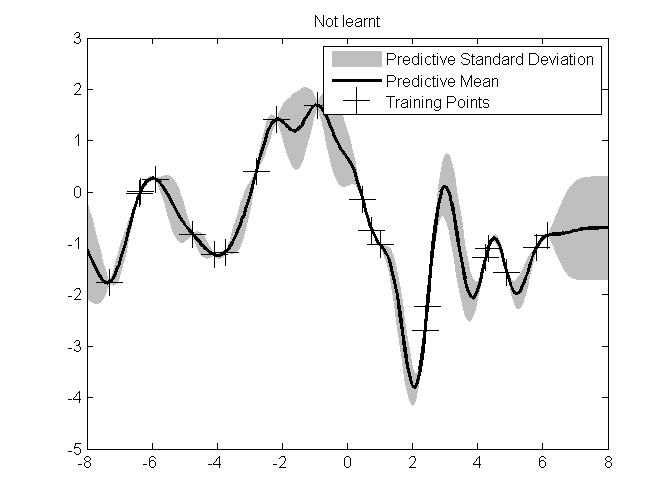
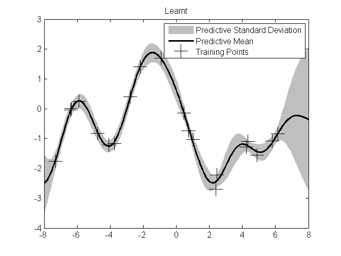
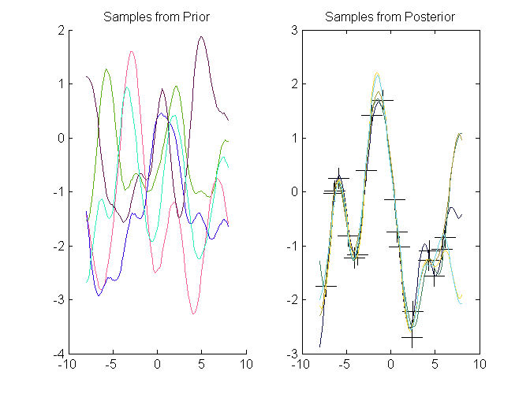

Contents
%%%%%%%%%%%%%%%%%%%%%%%%%%%%%%%%%%%%%%%%%%%%%%%%%%%%%%%%%%%%%%%%%%%%%%% % Gaussian Process Demo Script % Demonstrates GP regression using the taco-pig toolbox on 1-D Data. %%%%%%%%%%%%%%%%%%%%%%%%%%%%%%%%%%%%%%%%%%%%%%%%%%%%%%%%%%%%%%%%%%%%%%% %Add optimization folder % p = pwd(); slash = p(1); % addpath(genpath(['..',slash,'optimization'])) addpath(genpath(['optimization']))
%%%%%%%%%%%%%%%%%%%%%%%%%%%%% 1-D Example%%%%%%%%%%%%%%%%%%%%%%%%%%%%%
close all; clear all; clear functions; clc; % import tacopig.*;
Set up 1-D Data
Training Data Rasmussen & Williams "Gaussian Processes for Machine Learning", Fig. 2.5
X = [-2.1775,-0.9235,0.7502,-5.8868,-2.7995,4.2504,2.4582,6.1426,... -4.0911,-6.3481,1.0004,-4.7591,0.4715,4.8933,4.3248,-3.7461,... -7.3005,5.8177,2.3851,-6.3772]; y = [1.4121,1.6936,-0.7444,0.2493,0.3978,-1.2755,-2.221,-0.8452,... -1.2232,0.0105,-1.0258,-0.8207,-0.1462,-1.5637,-1.098,-1.1721,... -1.7554,-1.0712,-2.6937,-0.0329]; xstar = linspace(-8, 8, 201); % Order data points for visualisation [X id] = sort(X); y = y(id);
Set up Gaussian process
% Use a standard GP regression model: GP = tacopig.gp.Regressor; % Plug in the data GP.X = X; GP.y = y; % Plug in the components GP.MeanFn = tacopig.meanfn.ConstantMean(mean(y)); % GP.CovFn = tacopig.covfn.Sum(tacopig.covfn.Mat3(),tacopig.covfn.SqExp());%SqExp(); GP.CovFn = tacopig.covfn.SqExp(); GP.NoiseFn = tacopig.noisefn.Stationary(); GP.objective_function = @tacopig.objectivefn.NLML; GP.solver_function = @anneal; % Initialise the hyperparameters GP.covpar = 0.5*ones(1,GP.CovFn.npar(size(X,1))); GP.meanpar = zeros(1,GP.MeanFn.npar(size(X,1))); GP.noisepar = 1e-3*ones(1,GP.NoiseFn.npar);
Before Learning: Query
GP.solve(); [mf, vf] = GP.query(xstar); sf = sqrt(vf); % Display predicitve mean and variance figure plot(X, y, 'k+', 'MarkerSize', 17) f = [mf+2*sf,flipdim(mf-2*sf,2)]'; h(1) = fill([xstar, flipdim(xstar,2)], f, [6 6 6]/8, 'EdgeColor', [6 6 6]/8); hold on h(2) = plot(xstar,mf,'k-','LineWidth',2); h(3) = plot(X, y, 'k+', 'MarkerSize', 17); title('Not learnt'); legend(h,'Predictive Standard Deviation','Predictive Mean', 'Training Points')
Learn & Query
disp('Press any key to begin learning.') pause GP.learn(); GP.solve(); [mf, vf] = GP.query(xstar); sf = sqrt(vf); % Display learnt model figure plot(X, y, 'k+', 'MarkerSize', 17) f = [mf+2*(sf),flipdim(mf-2*(sf),2)]'; h(1) = fill([xstar, flipdim(xstar,2)], f, [6 6 6]/8, 'EdgeColor', [6 6 6]/8); hold on h(2) = plot(xstar,mf,'k-','LineWidth',2); h(3) = plot(X, y, 'k+', 'MarkerSize', 17); title('Learnt'); legend(h,'Predictive Standard Deviation','Predictive Mean', 'Training Points') pause
Press any key to begin learning. Running simulated annealing. Does not use gradients. Initial temperature: 1 Final temperature: 4.01735e-07 Consecutive rejections: 1128 Number of function calls: 7979 Total final loss: 14.9551
Generate samples from prior and posterior
figure; subplot(1,2,1) xstar = linspace(-8,8,100); hold on; for i = 1:5 fstar = GP.sampleprior(xstar); plot(xstar,fstar, 'color', rand(1,3)); end title('Samples from Prior') subplot(1,2,2) plot(X, y, 'k+', 'MarkerSize', 17) xstar = linspace(-8,8,100); hold on; for i = 1:5 fstar = GP.sampleposterior(xstar); plot(xstar,fstar, 'color', rand(1,3)); end title('Samples from Posterior')